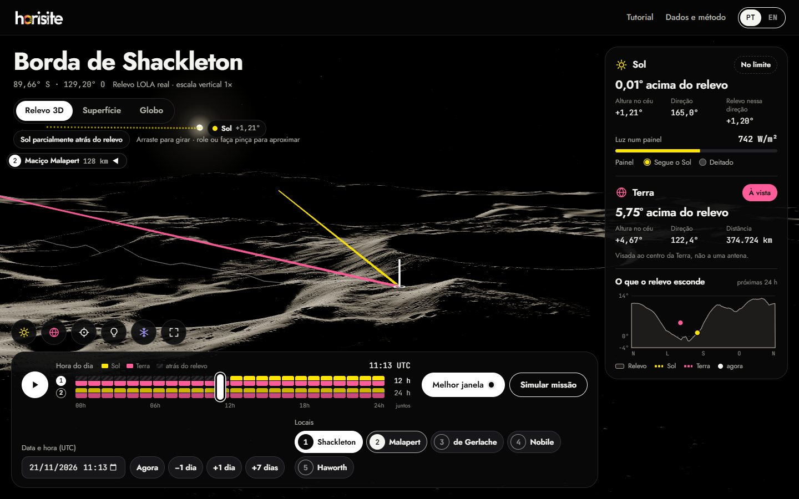
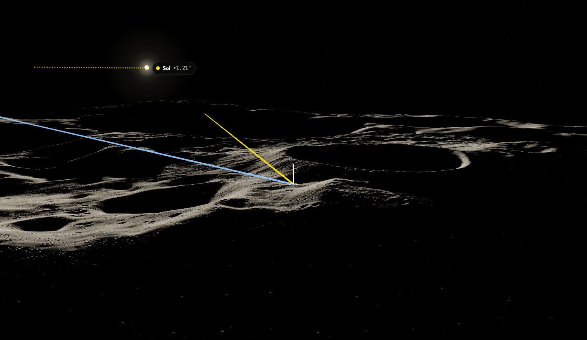
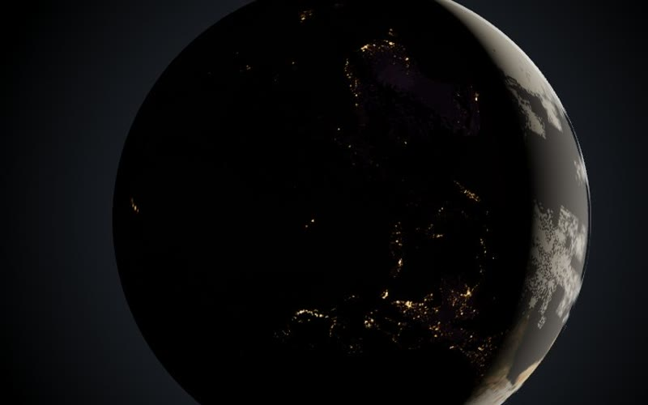

Will there be power?
The Sun’s height above the real relief and the light reaching a panel, in W/m².
Horisite is a free explorer of the Moon’s south pole. Pick a place and a date and see, on the real terrain, whether there is sunlight for power and Earth in the sky to call home.
There the Sun skims the horizon and Earth barely moves in the sky. A ridge 20 km away can switch off a solar panel or cut the line of sight home; half a kilometre aside can give both back.
The Sun’s height above the real relief and the light reaching a panel, in W/m².
Whether Earth’s centre is above the local horizon, and by how many degrees.
The longest continuous stretch with Sun and Earth together in the next 30 days.
Choose up to three sites, change the moment and read the answer in the 3D scene itself: rays to the Sun and Earth show where the relief blocks them.


Vertical scale 1× · lunar curvature · sun shadows
longest common window for Shackleton and Malapert from 2 October 2026, in 1-hour samples.
The real silhouette around the Shackleton rim and the Sun’s path in the next 24 hours, computed now.

Through the app’s lens, with its real phase at that moment and city lights on the night side.


Tick up to three of the five south pole reference regions.
UTC date and time, with the 24-hour bar and time playback.
Rays, the Sun and Earth paths and the margin over the relief, in the scene.
The longest stretch with Sun and Earth together, and the mission to it.
Open the relief, change the date and watch the shadow move. The tutorial has examples you can reproduce.
All five regions lie in the south polar area NASA studies for Artemis landings.
Compare light and line of sight in minutes, before moving on to finer mission analysis.
Runs in the browser on computer and phone, with no sign-up and nothing to install.
Open in your browser